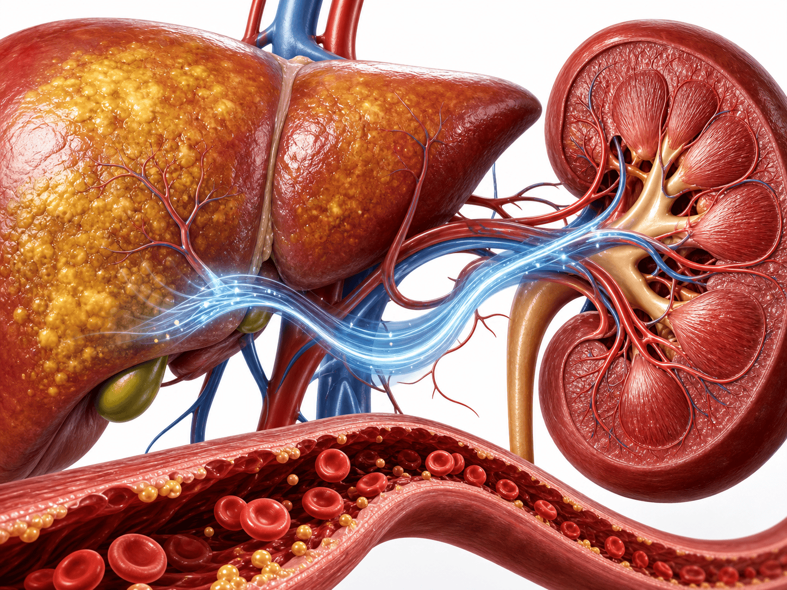
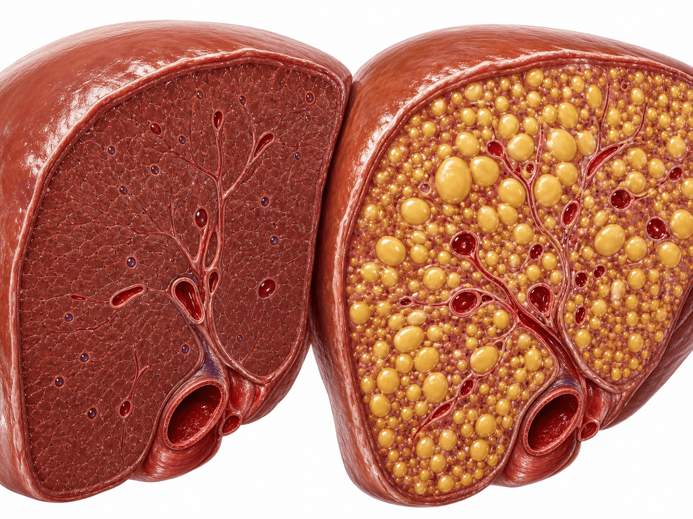
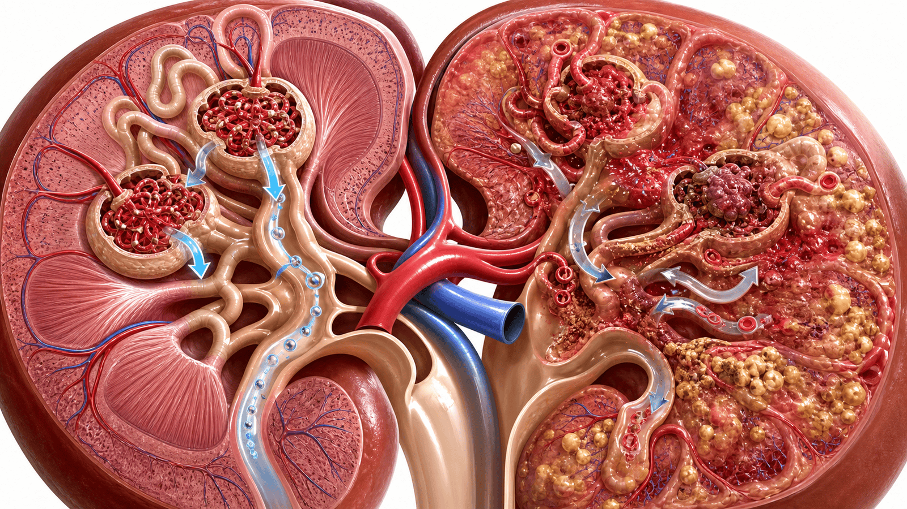
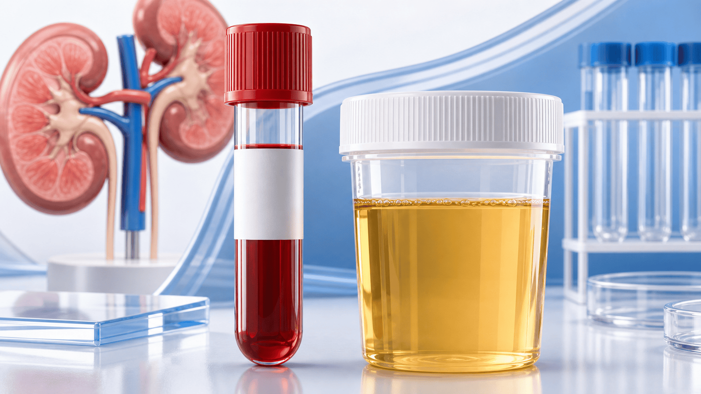

MASLD는 간에 국한된 병이 아니라 다장기 심대사 질환이다. 7명 중 1명이 CKD를 동반하고, 동반군의 조사망률이 더 높았다. 지방간을 확인하면 간 수치만 보지 말고 eGFR + uACR로 콩팥을 함께 평가한다.
Tip · 사망 비교는 보정 전 수치라 '위험 2배'로 단정하지 않습니다 — 예후가 나쁜 신호로 읽습니다.근거 · Liver Int 2026;46(7):e70747 · PMID 42347761 · random effects
광교바른내과 · 의료진 논문 리뷰 · ⚠️ 교육·참고용 — 실제 진료 결정은 최신 1차 자료·임상 판단으로 최종 확인
02 / 13
CHAPTER 02 · 배경
왜 지방간에서 콩팥을 보아야 하나
MASLD = 대사이상 관련 지방간질환 — 인슐린저항성·염증을 공유하는 다장기 심대사 질환
MASLD를 다장기 질환으로 보는 이유
명칭 변화 — NAFLD → MASLD, 대사이상(당뇨·비만·고혈압·이상지질혈증)을 전제로 정의
공유 기전 — 인슐린저항성·전신 염증·심대사 손상이 간과 콩팥에 동시 작용
CKM 흐름 — 심장·신장·대사를 하나로 보는 최근 관리 패러다임
이 메타분석이 채운 공백
MASLD에 동반된 CKD의 유병률·발생률·예후 근거가 흩어져 있었다 — 36개 관찰연구를 통합해 CKD 부담과 사망을 정량화했다.

Tip · 지방간을 '간 수치 문제'로만 보면 콩팥 위험을 놓칩니다(그림은 설명용).근거 · Liver Int 2026 도입부 · MASLD 명명(AASLD/EASL 2023) · CKM syndrome (AHA 2023)
광교바른내과 · 의료진 논문 리뷰 · ⚠️ 교육·참고용 — 실제 진료 결정은 최신 1차 자료·임상 판단으로 최종 확인
03 / 13
CHAPTER 03 · 연구 설계
Systematic review & meta-analysis 설계
36개 관찰연구 통합 — MASLD 성인에서 CKD 유병률·발생률·사망을 random-effects로 추정
포함 연구
36개
관찰연구 · 성인 MASLD · 2025-09-25까지 검색
유병률 분석
575,615명
23개 연구에서 통합
CKD 사례
56,248건
유병률 분석 대상 중 CKD
신규 CKD
27,996건
발생률 분석 · 13개 연구
1차 결과
MASLD에서 CKD 유병률(pooled prevalence).
2차 결과
CKD 발생률 · 전체사망·심혈관·신장 결과 · 위험인자 오즈비(OR).
통계
Random-effects model · 위험인자별·하위군 분석.
한계 인지
관찰연구 기반 · 연구 간 이질성 큼 · MASLD·CKD 진단기준 연구별 상이.
Tip · 관찰연구 메타분석이라 연관성의 크기를 보여 줄 뿐, 인과를 증명하지는 않습니다.근거 · Liver Int 2026;46(7):e70747 · PMID 42347761 · 36 observational studies
광교바른내과 · 의료진 논문 리뷰 · ⚠️ 교육·참고용 — 실제 진료 결정은 최신 1차 자료·임상 판단으로 최종 확인
04 / 13
CHAPTER 04 · 유병률
얼마나 흔한가 — 7명 중 1명
MASLD 환자에서 CKD 유병률 15.22% · 신규 발생률 22.17/1,000 인년 — 드문 합병증이 아니다

CKD 유병률 · 약 7명 중 1명
15.22%
95% CI 9.69–23.12 · 23개 연구·575,615명
CKD 신규 발생률 · /1,000 인년
22.17
추적 중 신규 CKD 발생 속도 · 95% CI 11.44–32.89 · 13개 연구
Tip · 그림 왼쪽은 정상 간, 오른쪽은 간세포에 지방이 쌓인 지방간입니다(설명용 그림).근거 · Liver Int 2026;46(7):e70747 · PMID 42347761 · pooled prevalence · incidence (random effects)
광교바른내과 · 의료진 논문 리뷰 · ⚠️ 교육·참고용 — 실제 진료 결정은 최신 1차 자료·임상 판단으로 최종 확인
05 / 13
CHAPTER 05 · 사망
동반되면 예후가 나쁘다 — 조사망률 비교
전체 조사망률(all-cause) — MASLD + CKD 동반 vs MASLD 단독
MASLD 단독 · /1,000 인년
7.26
95% CI 2.97 ~ 11.56
MASLD + CKD 동반 · /1,000 인년
18.28
95% CI 3.45 ~ 33.11
읽는 법
CKD가 동반된 MASLD 환자에서 조사망률이 더 높았다. CKD는 단순 부수 소견이 아니라 예후가 나쁘다는 신호로 본다.
단정하지 않는 이유
나이·동반질환을 보정하지 않은 조사망률 비교이고 두 군의 95% 신뢰구간이 겹친다 — '사망 위험 2배'로 단정할 수 없다. 관찰연구라 인과도 아니다.
Tip · 환자·동료에게는 '콩팥병이 함께 있으면 사망률이 더 높게 관찰됐다'까지만 말합니다.근거 · Liver Int 2026;46(7):e70747 · PMID 42347761 · all-cause mortality 18.28 vs 7.26 /1,000 PY (random effects)
광교바른내과 · 의료진 논문 리뷰 · ⚠️ 교육·참고용 — 실제 진료 결정은 최신 1차 자료·임상 판단으로 최종 확인
06 / 13
CHAPTER 06 · 위험인자
누구에게 CKD 위험이 더 큰가
MASLD 환자 중 CKD 위험 — 당뇨·고혈압·이상지질혈증 오즈비(OR). 셋 모두 1보다 크다
동반 위험인자
CKD 위험 (OR)
95% CI
당뇨 (diabetes)
1.94
1.69 ~ 2.22
고혈압 (hypertension)
1.49
1.29 ~ 1.72
이상지질혈증 (dyslipidemia)
1.22
1.20 ~ 1.24
어떻게 읽나
세 인자 모두 95% CI가 1을 넘어 유의하다. 당뇨가 가장 강하고, 이상지질혈증은 상승폭은 작지만 CI가 매우 좁아 일관되게 위험을 높인다.
진료 적용
위험인자가 겹칠수록 신장 선별을 더 적극적으로, 혈당·혈압·지질은 목표까지 통합 관리. 관찰 연관이라 인과 증명은 아니다.
Tip · 그림은 지방간 주변의 대사 위험(지방·혈당·혈압)을 묶어 보여 줍니다(설명용 그림).근거 · Liver Int 2026;46(7):e70747 · PMID 42347761 · risk factors for CKD in MASLD (pooled OR)
광교바른내과 · 의료진 논문 리뷰 · ⚠️ 교육·참고용 — 실제 진료 결정은 최신 1차 자료·임상 판단으로 최종 확인
07 / 13
CHAPTER 07 · 간–콩팥 축
왜 간과 콩팥이 함께 상하나
인슐린저항성·전신 염증·심대사 손상 — 지방간과 콩팥병이 공유하는 경로

① 인슐린저항성
간의 지방 축적을 만드는 인슐린저항성이 콩팥 사구체에도 압력·대사 부담으로 작용한다.
② 전신 염증
만성 저강도 염증(사이토카인)이 혈관 내피와 신장 미세혈관 손상을 촉진한다.
③ 심대사 손상
고혈압·이상지질혈증·비만이 겹치며 사구체 고압·동맥경화로 신기능을 갉아먹는다.
하나의 축
간·콩팥·심혈관은 같은 대사 손상을 공유한다 — 지방간이 있으면 콩팥도 위험하다.
Tip · 그림은 사구체·미세혈관 손상을 보여 주는 설명용 그림입니다.근거 · Liver Int 2026 고찰 · MASLD–CKD 공유 병태생리
광교바른내과 · 의료진 논문 리뷰 · ⚠️ 교육·참고용 — 실제 진료 결정은 최신 1차 자료·임상 판단으로 최종 확인
08 / 13
CHAPTER 08 · 선별
어떻게 콩팥을 선별하나 — eGFR + uACR
지방간이 확인되면 두 가지를 함께 — 혈액의 사구체여과율과 소변의 알부민/크레아티닌비
혈액 — eGFR
혈청 크레아티닌 기반 추정 사구체여과율. 신장의 여과 기능을 본다. <60이 지속되면 CKD 신호.
소변 — uACR
소변 알부민/크레아티닌비. 사구체 손상(단백뇨)을 조기에 잡는다. eGFR이 정상이어도 오를 수 있다.
둘을 함께 · 정기 확인
서로 다른 손상을 잡으므로 둘 다 봐야 초기 CKD를 놓치지 않는다. 지방간 확인 시 기본 평가에 넣고, 당뇨·고혈압·이상지질혈증이 있으면 더 자주 추적.

Tip · 그림은 혈액(eGFR)과 소변(uACR) 두 검사를 함께 보는 선별을 나타냅니다(설명용 그림).근거 · Liver Int 2026 임상 함의 · KDIGO CKD 선별 (eGFR + uACR)
광교바른내과 · 의료진 논문 리뷰 · ⚠️ 교육·참고용 — 실제 진료 결정은 최신 1차 자료·임상 판단으로 최종 확인
09 / 13
CHAPTER 09 · 통합관리
진료 적용 — CKM 통합관리 4단계
지방간을 확인하면 콩팥·심혈관·대사를 하나로 — CKM·KDIGO 흐름과 일치하는 접근
1 · 확인
지방간 = 신호
영상·검사로 MASLD 확인 시 간만의 문제로 끝내지 않는다. 당뇨·고혈압·이상지질혈증 동반 여부를 함께 점검.
2 · 선별
신장 함께 평가
eGFR + uACR을 기본 평가에 포함. 위험인자가 있으면 더 적극적으로·더 자주 선별.
3 · 통합관리
심대사 함께
혈당·혈압·지질을 목표까지 관리. 심장·신장 보호가 함께 필요하면 SGLT2 억제제 등 통합 전략을 고려.
4 · 추적
정기 재평가
신기능(eGFR·uACR)·대사 지표를 정기 추적. 악화 시 신장내과 협진.
네 단계는 CKM(심장·신장·대사) 증후군과 KDIGO CKD 2024 흐름을 따른다 — 지방간 진료를 콩팥·심혈관 평가의 출발점으로 삼는다.